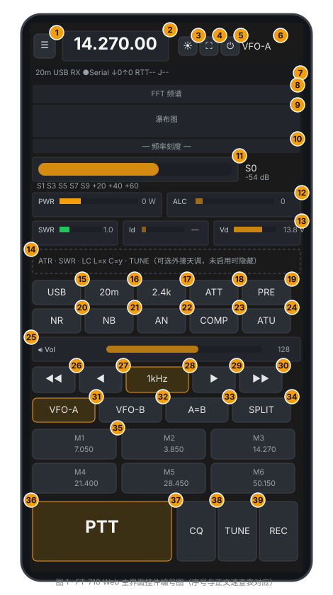
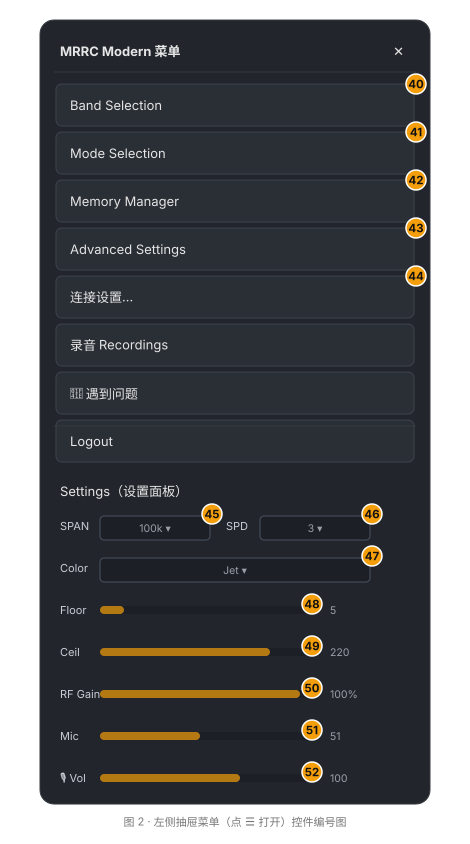

适用于 MRRC Web Control（v1.10.x，2026-08 之后的界面），支持 FT-710、IC-7300 与 IC-7300MK2。本文档逐项说明界面上每一个按钮、滑杆、下拉框的功能与用法，编号与文末插图（图 1 主界面、图 2 菜单）中的琥珀色序号一一对应。
0. 开始之前：连接与登录
| 步骤 | 说明 |
|---|---|
| 1. 启动服务 | 在电台电脑上运行 python server.py（或 Windows 安装版/桌面启动器），服务默认监听 0.0.0.0:8888，HTTPS 优先（首次运行自动生成自签名证书）。 |
| 2. 打开页面 | 手机/电脑浏览器访问 https://<服务器IP>:8888（局域网）或 http://localhost:8888（本机）。iPhone 上建议用 Safari 并「添加到主屏幕」以获得 PWA 全屏体验。 |
| 3. 登录 | 输入共享密码（服务启动时由 MRRC_WEB_PASSWORD 或安装向导设置），点 Login。成功后在 mrrc_auth Cookie（30 天有效）；密码错误返回 401，5 分钟内连续 5 次失败会触发 429 限流，需等待后再试。 |
| 4. 建立连接 | 手机端：点顶栏 ⏻ 开始连接（见控件 5）；桌面端打开页面后自动连接。状态栏 ●Serial 变绿表示与电台的 CAT 串口已连通。 |
⚠️ 电台硬件电源开关不在本界面内——⏻ 只控制浏览器与服务器的 Web 连接，不控制电台电源（V2.13 已撤回电台电源软开关功能）。
0.5 电台型号差异
服务器通过 MRRC_RADIO_MODEL（ft710、ic7300、ic7300mk2）选择后端，前端会根据后端上报的 capabilities 自动调整可用控件。
| 功能 | FT-710 | IC-7300 / IC-7300MK2 |
|---|---|---|
| 串口协议 | Yaesu CAT，38400 baud | Icom CI-V，115200 8N1，默认地址 0x94 |
| 频谱来源 | FT4222 SPI（或 S-meter 回退） | CI-V 0x27 帧（或 S-meter 回退） |
| USB 音频 | 44.1 kHz，需重采样到 48 kHz | 48 kHz，无需重采样 |
| AN（自动陷波） | 有 | 无，界面隐藏 |
| Vd / Id 仪表 | 有 | 无，界面隐藏 |
| 滤波器 | 多档语音/窄带宽度 | FIL1–FIL3 循环 |
| ATT | 0 / 6 / 12 / 18 dB | 开/关 |
| VFO-B 直接选择 | 有 | 无 |
| 内置天调 | 无（可外接 ATR1000） | 有 |
| 70 MHz | 无 | 视地区版本而定 |
| 发射时频谱 | 暂停并显示「频谱暂停」 | 继续显示（CI-V 频谱不受发射影响） |
0.6 Windows 配置与运行
本章说明 IC-7300 与 FT-710 在 Windows 桌面版（MRRC-Modern-Setup.exe） 下分别如何配置并使其工作：装驱动 → 确认串口 → 编辑配置 → 电台侧设置 → 启动验证。
配置统一写在
%LOCALAPPDATA%\MRRC-Modern\mrrc_modern.env（开始菜单里的 Edit Configuration 快捷键会打开它）。变量名用新的MRRC_*前缀；旧的FT710_*前缀仍被兼容接受（MRRC_*优先），升级用户可保留原配置。修改后需重启 MRRC Modern 生效。
0.6.1 通用步骤（两台都适用）
- 安装 MRRC-Modern-Setup.exe（开始菜单出现
MRRC Modern与Edit Configuration两个快捷方式）。 - 用 USB 线连接电台到电脑，并开机。
- 打开 设备管理器，在「端口 (COM 和 LPT)」下确认电台的串口：
- IC-7300：一个 COM 口（USB CI-V）。
- FT-710：两个 Silicon Labs CP210x COM 口（较低编号通常是 CAT 用的 Enhanced COM Port）。
- 打开
mrrc_modern.env，设置MRRC_RADIO_MODEL（ic7300/ic7300mk2/ft710，见 0.6.2 / 0.6.3 的完整示例），并确保MRRC_SERIAL_PORT指向第 3 步确认的串口。 - 启动
MRRC Modern，浏览器自动打开登录页。输入MRRC_WEB_PASSWORD后，状态栏 ●Serial 变绿即表示 CAT 已连通。
换电台时不需要重装：改
MRRC_RADIO_MODEL和串口/波特率即可，其余步骤照对应小节核对。
0.6.2 IC-7300 / IC-7300MK2
驱动：IC-7300 用标准 Windows USB-serial 驱动（通常自动安装），不需要 FTDI 驱动。
设备管理器确认：「端口 (COM 和 LPT)」显示一个 COM 口，即 USB CI-V。
mrrc_modern.env 完整示例：
MRRC_RADIO_MODEL=ic7300 # 或 ic7300mk2
MRRC_SERIAL_PORT=COM5 # 改成设备管理器里看到的 CI-V COM 口
MRRC_BAUD_RATE=115200
MRRC_WEB_HOST=127.0.0.1
MRRC_WEB_PORT=8888
MRRC_WEB_PASSWORD=change_this_password
MRRC_AUDIO_RX_DEVICE=USB Audio
MRRC_AUDIO_TX_DEVICE=USB Audio
# 若电台的 CI-V 地址不是默认 0x94，用下面这行覆盖：
#IC7300_CIV_ADDR=0x94
# IC-7300 用 CI-V 0x27 频谱，无需 FTDI 库——删掉/注释 MRRC_FTDI_LIB_DIR电台侧设置（面板菜单，开机时设置一次）：
CI-V USB Baud Rate= 115200（MRRC_BAUD_RATE必须一致）。CI-V USB Address= 94h（默认即可，与IC7300_CIV_ADDR一致）。- 建议开启
CI-V Transceive（连接时服务端会自动发送开启命令）。
音频：IC-7300 的 USB 音频是 48 kHz 原生，服务端直接透传，无需重采样。Windows 下该声卡以 USB Audio CODEC / USB Audio Device 形式枚举（本地化系统可能是「麦克风 (USB Audio Device)」）。MRRC_AUDIO_RX_DEVICE / MRRC_AUDIO_TX_DEVICE 填 USB Audio 即可同时匹配两种形式。
频谱：来自 CI-V 0x27 帧，走 CAT 串口，不需要 FT4222。默认跨度 ±100 kHz，可在菜单的 SPAN 下拉调整。
验证清单：
- 状态栏 ●Serial 变绿。
- 频率、模式、S 表跟随电台面板变化（面板改动也会回传——Transceive）。
- 浏览器能听到接收声音（📶 音量滑杆、状态栏无「无声」告警）。
- 瀑布图有信号（频谱来自 CI-V
0x27；发射期间仍会刷新，这是与 FT-710 不同之处）。 - 长按 PTT 说话，功率/ALC 表有反应（首次发射请用小功率确认）。
0.6.3 FT-710
驱动：
- 必须：Silicon Labs CP210x Universal Windows Driver（CAT 串口用）。
- 可选：FTDI D2XX 驱动 —— 仅当需要 FT4222 真频谱时。没装则自动回退到 S-meter 合成频谱（可用但不含真实 FFT 数据）。
设备管理器确认：「端口 (COM 和 LPT)」显示两个 Silicon Labs CP210x COM 口。较低编号的那个通常是 CAT 用的 Enhanced COM Port；另一个是 FT4222 频谱口（MRRC_SCOPE_PORT，留空即自动探测）。
mrrc_modern.env 完整示例：
MRRC_RADIO_MODEL=ft710
MRRC_SERIAL_PORT=COM3 # 改成 Enhanced COM Port（两个 CP210x 里较低编号）
MRRC_BAUD_RATE=38400
MRRC_WEB_HOST=127.0.0.1
MRRC_WEB_PORT=8888
MRRC_WEB_PASSWORD=change_this_password
MRRC_AUDIO_RX_DEVICE=USB Audio
MRRC_AUDIO_TX_DEVICE=USB Audio
MRRC_FTDI_LIB_DIR=vendor\ftdi\windows\bin\x64
#MRRC_SCOPE_PORT= # 留空自动探测 FT4222 频谱口电台侧设置（FT-710 面板 FUNC → RADIO SETTING）：
- 各模式的
MOD SOURCE设为USB（SSB 必设；AM / FM / PSK/DATA 若要用也设 USB），否则 PTT 按下没有调制。 RPTT SELECT保持OFF：PTT 由 CAT 命令控制，不走 RTS/DTR。
音频：FT-710 的 USB 音频是 44.1 kHz 原生，服务端会把它重采样到 48 kHz 再走网络。Windows 下该声卡同样以 USB Audio CODEC / USB Audio Device 形式枚举，MRRC_AUDIO_RX_DEVICE / MRRC_AUDIO_TX_DEVICE 填 USB Audio 即可。
频谱：真频谱来自 FT4222 SPI（需要 MRRC_FTDI_LIB_DIR 指向含 FT4222.dll / ftd2xx.dll 的目录）；缺失时回退到 S-meter 合成频谱。发射期间频谱暂停并显示「频谱暂停」，属正常现象。
验证清单：
- 状态栏 ●Serial 变绿。
- 频率、模式、S 表跟随电台。
- 浏览器能听到接收声音。
- 瀑布图有信号；若只有 S-meter 合成频谱，说明 FTDI 库缺失或未指向正确目录。
- 长按 PTT 说话，功率/ALC 表有反应（确保
MOD SOURCE=USB）。
0.6.4 常见问题（FAQ）
| 问题 | 解答 |
|---|---|
我该选 ft710、ic7300 还是 ic7300mk2？ |
看你手头的电台：Yaesu FT-710 用 ft710；Icom IC-7300 用 ic7300；IC-7300MK2 用 ic7300mk2（CI-V 指令面与 7300 相同）。 |
| 换了一台电台，要重装软件吗？ | 不用。改 MRRC_RADIO_MODEL 和串口/波特率，重启即可。 |
| Serial 一直是红点 / 灰点 | CAT 未连通。逐项检查：电台开机、USB 线、MRRC_SERIAL_PORT 是否指向设备管理器里的正确串口、波特率（IC-7300=115200、FT-710=38400）与电台菜单一致。 |
| IC-7300：设备管理器里没有 COM 口 | 驱动未装或 USB 线是纯充电线。换数据线，检查「端口 (COM 和 LPT)」是否有 USB Serial Port。 |
| FT-710：两个 COM 口，选哪个？ | 选较低编号的 CP210x（Enhanced COM Port，CAT）。MRRC_SCOPE_PORT 留空自动探测另一个。 |
| 没声音 / 只听到电脑音箱声音 | 音频设备没锁对。把 MRRC_AUDIO_RX_DEVICE / MRRC_AUDIO_TX_DEVICE 设为 USB Audio；若有多台同类 USB 声卡，用启动日志里 PyAudio initialized. Available devices: 列出的索引号锁定。 |
| FT-710：瀑布图有图形但不是真频谱 | 这是 S-meter 合成频谱。确认 MRRC_FTDI_LIB_DIR 指向含 FT4222.dll / ftd2xx.dll 的目录，并已装 FTDI D2XX 驱动。 |
| IC-7300：瀑布图不动 | 检查频谱是否停用：菜单里确保 CI-V 0x27 scope 数据输出开启；MRRC_SERIAL_PORT 若是错误的 COM 口也会导致无频谱。 |
| 状态栏出现红色「无声」 | RX 音频流 20 秒全零，电台 USB 音频接口可能卡死。重启电台或重插 USB 线。 |
| 改了配置没生效 | 改完 mrrc_modern.env 必须重启 MRRC Modern（关掉窗口重新启动）。 |
1. 主界面控件编号图

图 1 为主界面（手机竖屏布局，桌面端宽度放大但控件一致）。琥珀色圆点为控件序号，与第 3 节速查表对应。

图 2 为点顶栏 ☰ 后滑出的左侧抽屉菜单。
2. 控件速查表（编号 → 名称 → 功能 → 操作）
2.1 顶栏（图 1 序号 1–7）
| # | 控件 | 功能 | 操作 |
|---|---|---|---|
| 1 | ☰ 菜单 | 打开左侧抽屉菜单（波段/模式/记忆/设置/退出） | 单击 |
| 2 | 频率显示 | 显示当前 VFO 的频率（7 位：MHz.kHz.Hz 十位） | 单击切换为输入框，直接键入 MHz（如 14.270）或 kHz（如 14270）后回车生效；Esc 取消 |
| 3 | ☀ 屏幕常亮 | 屏幕唤醒锁（Wake Lock），防止操作中熄屏；浏览器不支持时自动降级为每 30 秒模拟点按的兜底方案 | 单击开关；首次任意触摸页面会自动开启 |
| 4 | ⛶ 全屏 | 浏览器全屏/退出全屏（沉浸式操作） | 单击切换 |
| 5 | ⏻ 连接开关 | 启动 / 停止 Web 客户端连接（4 路 WebSocket：控制/收音频/发音频/频谱）。不是电台电源开关 | 单击：断开时点击开始连接，连接中点击断开并停止自动重连 |
| 6 | VFO-A / VFO-B | 当前活动 VFO 指示（琥珀色高亮 = 活动 VFO） | 只读指示；切换活动 VFO 用序号 31/32 按钮 |
| 7 | 状态栏 | 一行显示：当前波段（如 20m）、模式（如 USB）、收/发状态（RX/TX/TUNE，发射时变红）、串口连接点（绿=已连接）、⚠无声告警（RX 音频持续 20 秒全零，电台 USB 音频可能卡死）、实时码率 ↓↑（下行/上行 kbps）、RTT 往返延迟与 J 抖动（ms） |
只读；其中 无声 告警出现时应检查电台 USB 连接或重启电台 |
2.2 频谱区（序号 8–10）
| # | 控件 | 功能 | 操作 |
|---|---|---|---|
| 8 | FFT 频谱折线 | 实时幅度-频率折线（青绿色），叠加频率刻度 | 单击：把当前 VFO 直接 QSY 到点击位置对应的频率（位移 ≤8px 才算点击，滑动不触发） |
| 9 | 瀑布图 | 频谱随时间滚动的热力图（颜色主题可在菜单调） | 同上，单击跳频；发射（TX/TUNE）期间瀑布暂停并显示「频谱暂停」 |
| 10 | 频率刻度 | 以当前 VFO 为中心的频率标尺（跨度由菜单 SPAN 决定） | 只读 |
点击 8/9 实现「指哪打哪」跳频；按住拖动则是页面滚动，不会误触发。
2.3 仪表区（序号 11–14）
| # | 控件 | 功能 | 操作 |
|---|---|---|---|
| 11 | S 表 | 信号强度表：S1–S9+60 渐变刻度 + 数值（S0 起）+ 相对电平（S9 = 0 dB 参考） |
只读（CAT SM0 或频谱帧数据） |
| 12 | PWR / ALC 表 | 发射功率（W）与 ALC 电平横向条 | 只读（CAT RM，0–255 原始值经分段线性标定） |
| 13 | SWR / Id / Vd 表 | 驻波比（SWR）、末级电流（A）、供电电压（V） | 只读；Id/Vd 仅在 TX 时有效，TX→RX 会清零。IC-7300 不显示 Id/Vd |
| 14 | ATR 行（可选） | 外接 ATR1000 网络天调的功率/SWR/LC 显示 + TUNE 调谐按钮 | 仅当服务端启用了 MRRC_ATR1000_HOST 且天调在线时显示；否则整行隐藏。TUNE 按钮点击触发服务端调谐辅助（SWR≤1.6 自动跳过，成功后记忆 LC 值） |
2.4 快捷控制区（序号 15–19）
| # | 控件 | 功能 | 操作 |
|---|---|---|---|
| 15 | 模式按钮（如 USB） |
循环切换模式。FT-710：LSB → USB → CW-U → AM → FM → RTTY-L → DATA-L；IC-7300：依后端模式表 | 单击循环；需要精确选择时用菜单 → Mode Selection（序号 40） |
| 16 | 波段按钮（如 20m） |
循环切换业余波段；切换后频率跳到该波段默认频率并自动选 VFO-A。FT-710 含 4m；IC-7300 可能含 70 MHz（视地区） | 单击循环；菜单 → Band Selection（序号 39）可精确选 |
| 17 | 滤波按钮（如 2.4k） |
循环切换滤波宽度。FT-710：多档语音/窄带宽度；IC-7300：FIL1 → FIL2 → FIL3 | 单击循环 |
| 18 | ATT 衰减 | 射频衰减器。FT-710：0 / 6 / 12 / 18 dB；IC-7300：开/关 | 单击循环 |
| 19 | PRE 前置放大 | 前置放大器。FT-710：3 档；IC-7300：依后端支持 | 单击循环 |
2.5 DSP 开关区（序号 20–24）
| # | 控件 | 功能 | 操作 |
|---|---|---|---|
| 20 | NR | 数字降噪（DNR，电台硬件 DSP）开关 | 单击开/关，开启时按钮琥珀色高亮 |
| 21 | NB | 噪声抑制（DBF 类脉冲抑制）开关 | 单击开/关 |
| 22 | AN | 自动陷波（Auto Notch）开关。IC-7300 无此功能，按钮隐藏 | 单击开/关 |
| 23 | COMP | 语音压缩器开关（CAT PR00/PR01） |
单击开/关 |
| 24 | ATU | 内置天调开关（AC000/AC001） |
单击开/关 |
NR/NB 的强度滑杆（NR Level 1–15、NB Level 0–10）保留在 DOM 中但默认隐藏（移动端空间不足）；如需调节可在浏览器开发者工具中显示或留待后续版本。
2.6 音量滑杆（序号 25）
| # | 控件 | 功能 | 操作 |
|---|---|---|---|
| 25 | 🔊 Vol | 浏览器端 RX 播放音量（0–255，带 10 倍增益补偿电台 USB 音频偏小的问题）。注意它不是电台 CAT 的 AF 增益——两者刻意解耦，轮询不会覆盖你的设置 | 拖动实时生效，松手保持；值存入 Cookie（ft710_afVol）。发射（TX/TUNE）期间接收增益自动静音（消自监听回音），松 PTT 后恢复 |
电台侧的 AF 增益（AF Gain）不受本滑杆控制；需要调电台面板音量时请用实体旋钮。
2.7 调谐区（序号 26–30）
| # | 控件 | 功能 | 操作 |
|---|---|---|---|
| 26 | ◀◀ | 频率下移 5×当前步进（快退） | 单击 |
| 27 | ◀ | 频率下移 1×当前步进 | 单击 |
| 28 | 步进按钮（1kHz） |
循环切换调谐步进：10Hz → 100Hz → 1kHz → 5kHz → 10kHz → 25kHz，按钮文本实时显示 | 单击 |
| 29 | ▶ | 频率上移 1×当前步进 | 单击 |
| 30 | ▶▶ | 频率上移 5×当前步进（快进） | 单击 |
调谐作用于活动 VFO（VFO-A 或 VFO-B，见序号 31/32）。
2.8 VFO 区（序号 31–34）
| # | 控件 | 功能 | 操作 |
|---|---|---|---|
| 31 | VFO-A | 选 VFO-A 为活动 VFO（频率显示/调谐/PTT 均以它为准） | 单击（已是活动态时忽略） |
| 32 | VFO-B | 选 VFO-B 为活动 VFO | 单击 |
| 33 | A=B | 把 VFO-B 的频率复制到 VFO-A（电台 A=B 语义：A 变 B） |
单击 |
| 34 | SPLIT | 收发异频（Split）开关：发射用 VFO-A、接收用 VFO-B（或反之，依电台设定） | 单击开/关，开启时按钮高亮 |
2.9 记忆频道（序号 35）
| # | 控件 | 功能 | 操作 |
|---|---|---|---|
| 35 | M1–M6 | 6 个记忆槽，每格显示编号 + 频率（MHz） | 单击：调出该频道（频率+模式，写入当前活动 VFO）；长按 0.8 秒：把当前活动 VFO 的频率+模式保存到该槽（带震动反馈），同时写入服务端 mem_channels.json 与本机 Cookie |
频道编辑/清空：菜单 → Memory Manager（序号 41）里对每个槽点 Clear 清空。频道数据由服务端持久化，换浏览器也能读到（Cookie 只做首屏快速回显）。
2.10 底部 PTT 区（序号 36–38）
| # | 控件 | 功能 | 操作 |
|---|---|---|---|
| 36 | PTT | 按下发射（载波 + 语音），松开停止 | 按住发射、松开停止（触摸按住/鼠标按住均可）；发射期间按钮变红。内置三重保险：①500ms 客户端看门狗（卡死自动松开发射）②页面关闭/断线的死手开关（服务端强制 TX0）③发射期间滑出页面也会自动释放 |
| 37 | TUNE | 发射调谐载波（用于天调/驻波调整），仅按住期间发射 | 长按：按住出载波，松开即停（无自锁，防止误触长发射）。发射期间频谱暂停显示 |
| 38 | REC | 把 RX 接收到的音频录成 MP3 文件（128 kbps，48 kHz 单声道） | 单击开始/再单击停止；停止时浏览器自动下载 .mp3。首次点击会现场加载约 500KB 的 MP3 编码器（lame.js），加载失败会提示「MP3 编码器加载失败」 |
PTT 键盘快捷键：桌面端按 空格键 等效于按住/松开 PTT（详见第 4 节）。
2.11 抽屉菜单（图 2 序号 39–51）
| # | 控件 | 功能 | 操作 |
|---|---|---|---|
| 39 | Band Selection | 弹窗列出全部 12 个波段（含频率范围），精确选段 | 单击波段项；选中后跳到该波段默认频率 |
| 40 | Mode Selection | 弹窗列出 7 种模式精确选择 | 单击模式项 |
| 41 | Memory Manager | 弹窗列出 M1–M6 的当前内容，可逐个 Clear 清空 | 单击 Clear / Close |
| 42 | Advanced Settings | 平滑滚动回 DSP 控制面板区（快捷定位） | 单击 |
| 43 | Logout | 退出登录：调 /api/auth/logout 作废会话并跳回登录页 |
单击 |
| 44 | SPAN 下拉 | 频谱显示跨度：10k/20k/50k/100k/200k/500k/1M（Hz），即瀑布图横轴宽度 | 选择后立即下发电台（scope_span）并重绘频谱 |
| 45 | SPD 下拉 | 频谱刷新速度档 1–5（电台 EX scope speed） |
选择后立即下发 |
| 46 | Color 下拉 | 瀑布图配色主题：Jet / Hot / Cold / Thermal / Night / Gray | 选择后本地生效并存入 Cookie（scopeTheme） |
| 47 | Floor 滑杆 | 瀑布图噪声底限（0–200）：低于该值显示为背景色，值越高背景越黑、弱信号越不可见 | 拖动实时预览，松手存 Cookie |
| 48 | Ceil 滑杆 | 瀑布图信号上限（50–255）：决定满刻度对应的信号强度，值越低强信号越早饱和变色 | 拖动实时预览，松手存 Cookie |
| 49 | RF Gain 滑杆 | 电台射频增益（CAT RG 0–255 映射为 0–100%）：调低可防强信号过载削波 |
拖动实时显示，松手生效下发电台 |
| 50 | Mic 滑杆 | 电台侧麦克风增益（CAT MIC/MG，0–100）：控制 TX 语音进入电台的输入电平 |
松手生效并写入 Cookie；每次重连后若与电台实际值不同会自动回推 |
| 51 | 🎙 Vol 滑杆 | 浏览器端麦克风软件增益（0–200 → 线性 0–2×，100 = 原声）：在采集后、编码前放大，与电台侧 Mic 相互独立 | 拖动实时生效（作用于麦克风 GainNode），值存 Cookie |
菜单底部显示版本号
FT-710 v1.0（前端资源版本，非电台固件版本）。
3. 键盘快捷键（桌面端）
| 按键 | 功能 |
|---|---|
| 空格（Space） | 按下 = 发射（PTT 开始），松开 = 停止发射 |
| ← / → | 频率下移 / 上移 1×当前步进 |
| ↑ / ↓ | 频率上移 / 下移 5×当前步进（快调） |
| 回车（在频率输入框内） | 提交输入的频率 |
| Esc（在频率输入框内） | 取消编辑 |
安全细节：键盘事件忽略长按自动重复（
e.repeat），也不在输入框内触发 PTT/调谐，避免打字时误发射。
4. 安全须知（请先阅读）
- PTT 是「按住才发射」，没有任何自锁模式；松开即停。若页面或浏览器崩溃，服务端死手开关会在最后一个客户端断开时自动强制释放发射（
TX0）。 - TUNE 同理，长按出载波、松手即停——调谐时请确认天线已接好、SWR 正常，长时间发射前建议先用小功率。
- 发射期间频谱暂停（FT-710 电台会干扰频谱数据流），瀑布图显示「TX 发射中 — 频谱暂停」是正常现象。IC-7300 使用 CI-V
0x27频谱，发射期间通常继续刷新。 - 无声（🔇）告警：状态栏出现红色「无声」表示 RX 音频流 20 秒全零——电台 USB 音频接口可能卡死，请重启电台或重插 USB 线。
- 多人共用时，PTT 所有权按「最后按下者 + 同一登录令牌」仲裁（V2.1 修复）：别在别人发射时抢按。
- 无线局域网内建议使用 HTTPS（自签名证书首次会有浏览器警告，属于预期行为）；
http://明文下浏览器会禁用麦克风与音频工作线程（AudioWorklet），iPhone 上尤其如此。
5. 常见问题（FAQ）
| 问题 | 解答 |
|---|---|
| 页面打开一直停在登录页 | 检查密码；若提示 429，等 5 分钟限流窗口结束。 |
| 状态栏 ●Serial 是红色/灰点 | CAT 串口未连通：检查 USB 线、串口号（MRRC_SERIAL_PORT）、电台是否开机。 |
| 点击 ⏻ 后没声音 | 检查浏览器麦克风/扬声器权限（HTTPS 下才允许）；确认电脑选择了电台的 USB 音频设备。 |
| 瀑布图不动 | 发射期间属正常；接收时不动请检查 FT4222 驱动与 MRRC_FTDI_LIB_DIR 配置，或查看是否触发「无声」告警。 |
| 记忆频道丢了 | 服务端文件是 mem_channels.json（随服务保存）；浏览器本地 Cookie 只作首屏回显。 |
| 录音文件在哪 | 点 REC 开始、再点 REC 停止后浏览器自动下载生成的 .mp3。 |
| 发射时听到自己声音 | 这是自监听回音，正常；接收音量在 TX 期间自动静音，松 PTT 后恢复。 |
附：界面元素与后台命令对照（供高级用户/排障）
| 界面元素 | 后台命令/通道 |
|---|---|
| 模式按钮 | MD / MD0（模式查询与设置） |
| 波段按钮 | BS（波段选择，服务端 band 命令） |
| 滤波按钮 | SH / SH0（滤波宽度，读回实际索引） |
| ATT / PRE | RA0–RA3 / PA0–PA2 |
| NR / NB / AN / COMP | NR1/0、NB1/0、AN1/0、PR01/PR00 |
| ATU | AC001（开）/ AC000（关）；调谐 TX2+AC003 |
| RF Gain | RG（0–255） |
| Mic | MIC/MG（0–100，电台侧） |
| 频率显示/调谐 | FA / FB / VS（活动 VFO 跟踪） |
| S 表 | SM0（+ 频谱帧 S 值） |
| 多路仪表 | RM3–RM8（PWR/ALC/SWR/Id/Vd） |
| 记忆频道 | /api/mem_channels（GET/POST）+ memRecall/memSave WS 消息 |
| 频谱 | /WSspectrum（1701B 帧）+ 电台 EX040101/EX040200（scope 初始化） |
| 音频 | /WSaudioRX（下行 Opus 48k/PCM）、/WSaudioTX（上行 Opus 48k CBR 64kbps） |
| 天调（可选） | /WSatr1000（JSON）+ MRRC_ATR1000_HOST 环境变量 |
文档维护：与 static/index.html、static/ft710_main.js、static/ft710_ui.js 保持一致；界面改动后请同步本指南与编号图。